20 candidates for Emmet's technique library (session 3D, H-26). Each was found in your instruction books and ranked by how widely official models in the LDraw OMR join its key parts (1315 sets mined). Each picture is a render of my sketch of it in Emmet's DSL, which validates with no findings; an accepted sketch becomes the technique, with its tests and render, and a rejected one is dropped. Nothing is taken from the models' files or the books' pages (D-48). Every candidate starts as Accept: switch the ones you don't want, add a note if it helps, then copy your answers and paste them to Claude.
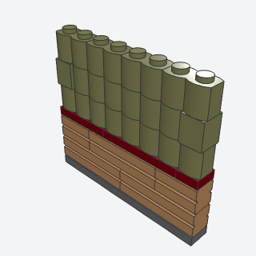
wainscot_split_wallA wall with its lower courses in brickwork and its upper courses in log siding or plain color, split by a trim band of plates in an accent color.
Lower courses of brickwork, a trim band, and log siding above: an agent reaches for it to make a plain cottage or town wall read as a built, aged house, with window sills lined up on the band.
Note: VARIANT: masonry_wall plus siding at a set split height, with a plate trim band between. 30136 log bricks were never made in Dark Green (the book's color), so the default upper color is Olive Green; siding='plain' gives plain bricks.
x, y, z, length, rows, low, color, trim, upper, siding, titlebatch-6/wainscot_split_wall.py15533 + 98283 + 30136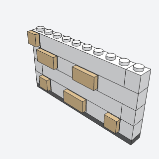
plaster_with_exposed_stonesA whitewashed wall with a few stones showing where the plaster has fallen away, each a tile on a side stud standing a plate proud.
Whitewashed walls with stones showing through, for the Cottage's upper walls and any rustic, coastal, or medieval house.
Note: A cousin of quoin_corner: pair them for stone corners (quoin_corner builds its own two corner walls). Stones are seeded, weighted low and toward the ends, never side by side or stacked.
x, y, z, length, rows, color, stone, stones, seed, titlebatch-6/plaster_with_exposed_stones.py87087 + 11211 + 3069b + 3070b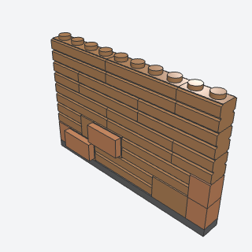
two_tone_masonryAn embossed brick wall with plain bricks in a neighboring tone mixed in and the odd brick standing proud, so it reads as real, uneven brickwork.
A brick wall that looks real and uneven without printed parts, for any town building's brick face.
Note: VARIANT of masonry_wall: adds seeded plain bricks in a neighboring tone, proud bricks (a 1 x 2 tile on 11211), and joint checking against the course below. Medium Nougat against Nougat is subtle in the render, as in the book.
x, y, z, length, rows, color, tone, plain, proud, seed, titlebatch-6/two_tone_masonry.py15533 + 98283 + 11211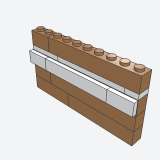
string_courseA thin light band across a facade at a floor line, standing a plate proud of the wall, that splits one story from the next.
A light band across a facade at each floor line, splitting the stories of a town building and lining up the upper sills.
Note: Related to wall_top_tie but it's a visible facade band, not a hidden tie. proud=False gives the book's plain flush plate course; the default is the proud side-stud version.
x, y, z, length, color, wall, proud, titlebatch-6/string_course.py30414 + 2431 + 6636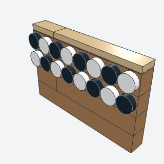
dentil_bandA row of round studs in two colors across a facade, under a cornice or over a wide doorway, like the teeth of a classical cornice.
A row of two-color round studs under a cornice or over a wide doorway, for civic and Victorian facades.
Note: The book's chunkier double band staggers the second row half a stud on jumpers; here rows=2 stacks the second row straight, with the colors shifted by one.
x, y, z, length, rows, wall, dots, titlebatch-6/dentil_band.py30414 + 98138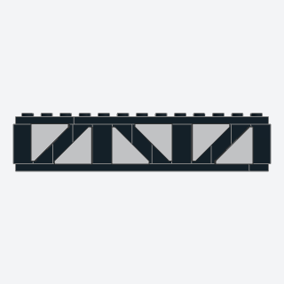
timber_frame_panelsWhite plaster panels crossed by dark posts and diagonal braces, each brace the dark strip left between two triangular tiles.
White plaster crossed by dark posts and diagonal braces, for a Tudor or medieval upper story where half_timber_band's posts alone look too plain.
Note: VARIANT of half_timber_band, which has posts only, 2-stud bays, and plaster flush with the posts. This one adds a diagonal brace in each 3-stud bay, leaning one way then the other: the stud-wide strip of timber color left between two 2 x 2 triangular tiles (35787) set in opposite corners, over timber-colored 1 x 1 tiles and plates; the plaster stands a plate proud of the timbers. The book used angled-end tiles; 22385 (Tile 3 x 2 with Angled End) is a pointed tile, so it didn't fit. 35787's body is 1.85 studs, so its footprints carry 0.15 and 0.375 offsets; its connectors seat on the grid.
x, y, z, bays, plaster, timber, titlebatch-6/timber_frame_panels.py35787 + 32952 + 22885 (some of its parts weren't confirmed from the book; I'd pin them when writing it)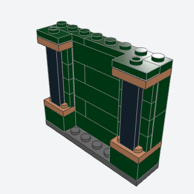
panel_pilasterA flat pilaster 2 studs wide with a raised base, a dark panel up its face, and a capital, framing a shopfront bay.
A paneled pilaster with a base and capital to frame a shopfront bay or a pub front.
Note: The book's base is a 2 x 2 crate (35700); the validator finds nothing to hold on the crate's open top, and 35700 was never made in Dark Green, so the base is a 2 x 2 brick standing a stud proud. The book's shaft is 11211/87087; side studs on 3-plate courses don't space for a vertical 1 x 4 tile, so the shaft is 32952 and jumper plates center the tile.
x, y, z, panels, color, accent, panel, titlebatch-6/panel_pilaster.py32952 + 15573 + 2431 (some of its parts weren't confirmed from the book; I'd pin them when writing it)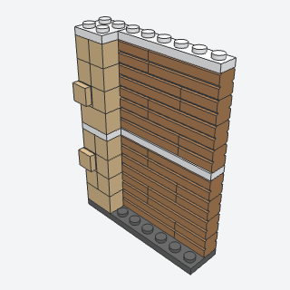
rusticated_stone_pilasterA tall pale stone pier of long and short blocks whose joints wander course to course, with the odd block end standing out and a light band at each floor line.
A tall pale stone pier beside a big door or at a corner of a civic building, with string courses at the floor lines.
Note: VARIANT of quoin_corner: a whole freestanding pier, not just corner tiles. The long block turns a quarter turn round the pier each course.
x, y, z, rows, color, band, band_every, titlebatch-6/rusticated_stone_pilaster.py3004 + 3005 + 87087 + 3070b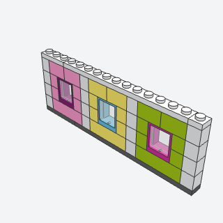
color_block_facadeA front of narrow wall sections, each its own bright color with a window framed in another, split by pilasters in a trim color, the cheerful storybook way.
A cheerful storybook front of narrow sections in different bright colors, each with a window framed in another color.
Note: More a style rule than a technique; it composes window_frame for each section. The book's pilasters are plate strips on the side studs of 87087 stacks; a vertical plate needs side studs 2.5 plates apart and 87087 stacks give 3, so these pilasters are flush 1 x 1 brick columns tied by the trim cap.
x, y, z, rows, sections, trim, titlebatch-6/color_block_facade.py60592 + 3005 (some of its parts weren't confirmed from the book; I'd pin them when writing it)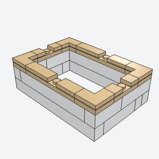
wall_top_corniceA band of light stone round the tops of four walls, corner plates tying the corners under smooth tiles, with a stud left open midway along each wall for the roof to grip.
A smooth contrasting stone band round the wall tops that ties the corners and seats a lift-off roof, for the Cottage's walls.
Note: VARIANT of wall_top_tie, which lays 1-wide plates in the wall color, swaps which walls own the corners course to course, and leaves a stud open at each corner. This one ties each corner with an L-shaped 2 x 2 corner plate (2420) under an L-shaped corner tile (14719, not confirmed from the book), in a contrast color, and leaves the lug studs open midway along each wall.
x, y, z, length, depth, color, lugs, titlebatch-6/wall_top_cornice.py2420 + 14719 + 6636 (some of its parts weren't confirmed from the book; I'd pin them when writing it)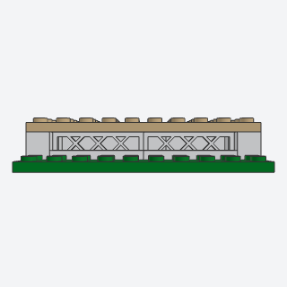
lattice_skirt_foundationA house or porch raised a brick above the garden on beams, the gap along the front closed with lattice panels like a real porch skirt.
A house or porch raised a brick above the garden with lattice closing the gap, so the house stands up off the lawn and the steps become a feature.
Note: Add steps with the stairs technique. The lattice sits set back under the floor plates' edge, as in the book; the front view shows it best.
x, y, z, length, depth, color, lattice, floor, titlebatch-6/lattice_skirt_foundation.py3633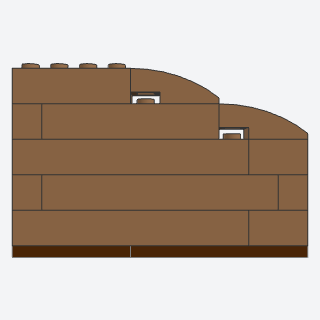
curved_wall_endThe open end of a cutaway wall stepping down in curved slopes instead of stopping square, so the cut reads as designed.
The open end of a cutaway (open-back) wall, where a square end looks unfinished.
Note: The book stacks 1 x 1 bricks on an inverted curved slope (13547 or 50950 turned over); this sweeps the top corner down with 50950s instead. 50950 has no stud at its high end (it holds by its two lower cells), so each course steps 3 studs in. The curve is long and gentle, not a tight quarter circle, and a small notch shows under each high end.
x, y, z, length, rows, sweep, end, color, titlebatch-6/curved_wall_end.py50950 (some of its parts weren't confirmed from the book; I'd pin them when writing it)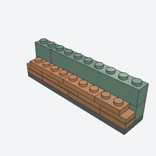
rough_stone_ledgeA heavy stone ledge of plates in two close tones, its top course set half a stud over on jumper plates and stopping short here and there, so its edge is ragged like cut stone.
A heavy ragged stone ledge where a lower story meets an overhanging or stepped-back upper one.
Note: Uses the jumper_offset idea. The top course sits half a stud over, so the next wall stands behind the ledge, not on it.
x, y, z, length, tones, seed, titlebatch-6/rough_stone_ledge.py15573 + 3710 + 3623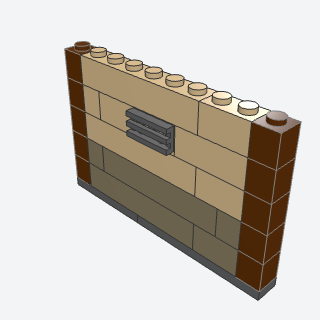
two_story_color_splitA wall whose lower courses are a darker tone than the rest, with corner boards in a third tone at its ends and a vent grille on a side stud, the plain way a diner or a shop is painted.
A plain painted building (a diner, a shop) with a darker band along its bottom, corner boards, and a vent.
Note: VARIANT of masonry_wall and close to wainscot_split_wall (no trim band, no masonry texture, plus corner boards and a vent). The name comes from the research; it's one story with a dark base.
x, y, z, length, rows, low, color, base, corner, vent, titlebatch-6/two_story_color_split.py3005 + 11211 + 2412b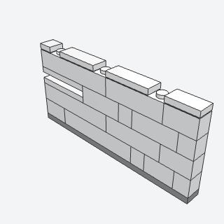
white_ashlar_wallA smooth stone wall of long, uneven courses with no repeating pattern, a few grooved and grille blocks breaking up its face, and a tiled top with the odd stud left open.
A smooth white stone wall of long, uneven courses, for fantasy cities, castles, and temples.
Note: VARIANT of masonry_wall: seeded random lengths 1 to 8 with no joint on a joint, grooved and grille slots every fourth course, and a tiled cap with a few open studs. The book's side-stud detail bricks (shields, lamps) are left to the caller.
x, y, z, length, rows, color, seed, cap, titlebatch-6/white_ashlar_wall.py2877 + 4216 + 2653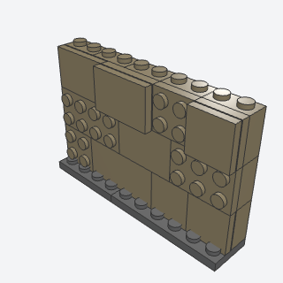
exposed_stud_stoneworkA big stone or concrete face with texture but no brick courses, made of panels on side studs, some left as bare studs, some tiled smooth, some standing a plate proud.
A big concrete or stone face with panel texture but no brick courses, for ruins, gates, pylons, and industrial walls.
Note: VARIANT of snot_panel: mixes studs-out plates, tiles, and proud plate-plus-tile panels as deliberate texture. The book's angled wedge panels on tapering pylons aren't done; the panels are rectangles.
x, y, z, length, rows, color, seed, titlebatch-6/exposed_stud_stonework.py22885 + 3022 + 3068b (some of its parts weren't confirmed from the book; I'd pin them when writing it)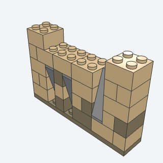
irregular_stone_wallA cellar or cave wall of uneven stone blocks in a broken bond, with gray rock showing through in steep slopes and a ragged top.
An uneven stone wall with rock showing through, for a cellar, cave, dungeon, or pirate tavern.
Note: The book also sets some stones back half a stud on jumpers; that isn't done here. The top course is ragged, so the return value is the top of the last full course.
x, y, z, length, rows, color, tone, rock, rocks, seed, titlebatch-6/irregular_stone_wall.py4460b + 2449 + 3003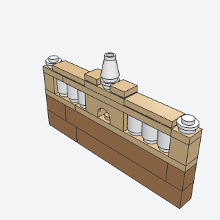
balustrade_parapetA stone balustrade along a roof edge, round balusters on every stud between a base rail and a handrail, with an arched centerpiece carrying an urn and stone piers at the ends.
A stone balustrade along a civic building's roof edge or a terrace, with an urn on an arched centerpiece.
Note: A VARIANT of fence in spirit. The book puts an orange cone or shell in the arch's opening; that's left out, since nothing fits under the 1 x 3 arch's opening.
x, y, z, length, color, baluster, titlebatch-6/balustrade_parapet.py3062b + 4490 + 4589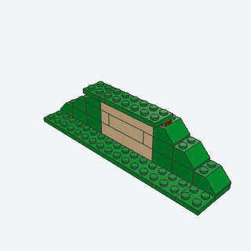
bermed_wall_revealA house front that shows only where the hill is cut away, the hill sloping down past both ends of the wall and its turf overhanging the top, so you never see where the wall stops.
A house front dug into a hill, with the hill falling past the wall's ends and its turf overhanging the top.
Note: The book's cheeks are tan curved bricks and green curved slopes; these are 45-degree 2 x 2 slopes stepping down from the wall's top corners. With wall=False the hill wraps a wall already built (one with a round door, say).
x, y, z, length, rows, color, beam, hill, wall, titlebatch-6/bermed_wall_reveal.py3039 + 3003 (some of its parts weren't confirmed from the book; I'd pin them when writing it)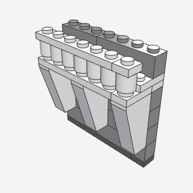
corbelled_balconyA small balcony on a wall's face, its slab carried by three long pointed corbels hanging under it, with a railing of round balusters along its front.
A small balcony on a medieval or fantasy wall held up by pointed corbels.
Note: VARIANT of machicolation (corbels under a slab). The book clips wedge plates on side studs to make tooth-shaped corbels; here each corbel is an inverted 75-degree slope 2 x 1 x 3 (2449) hanging from the slab, all on the grid. The book's small roofed window box on top is left out; a baluster railing stands in its place.
x, y, z, length, color, rail, titlebatch-6/corbelled_balcony.py2449 + 3062b (some of its parts weren't confirmed from the book; I'd pin them when writing it)